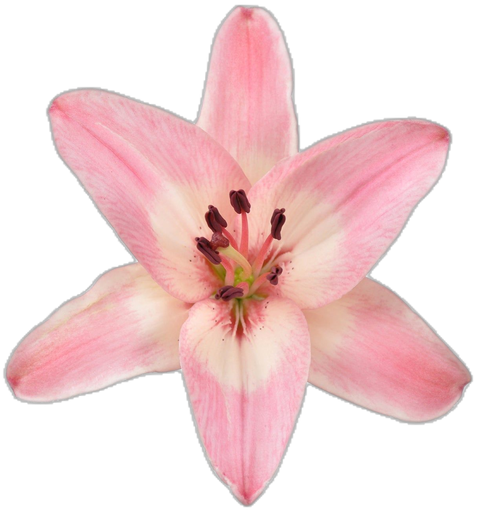
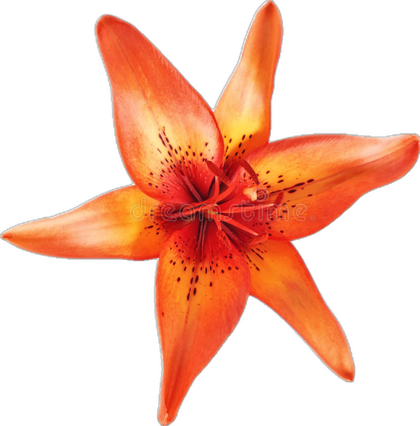
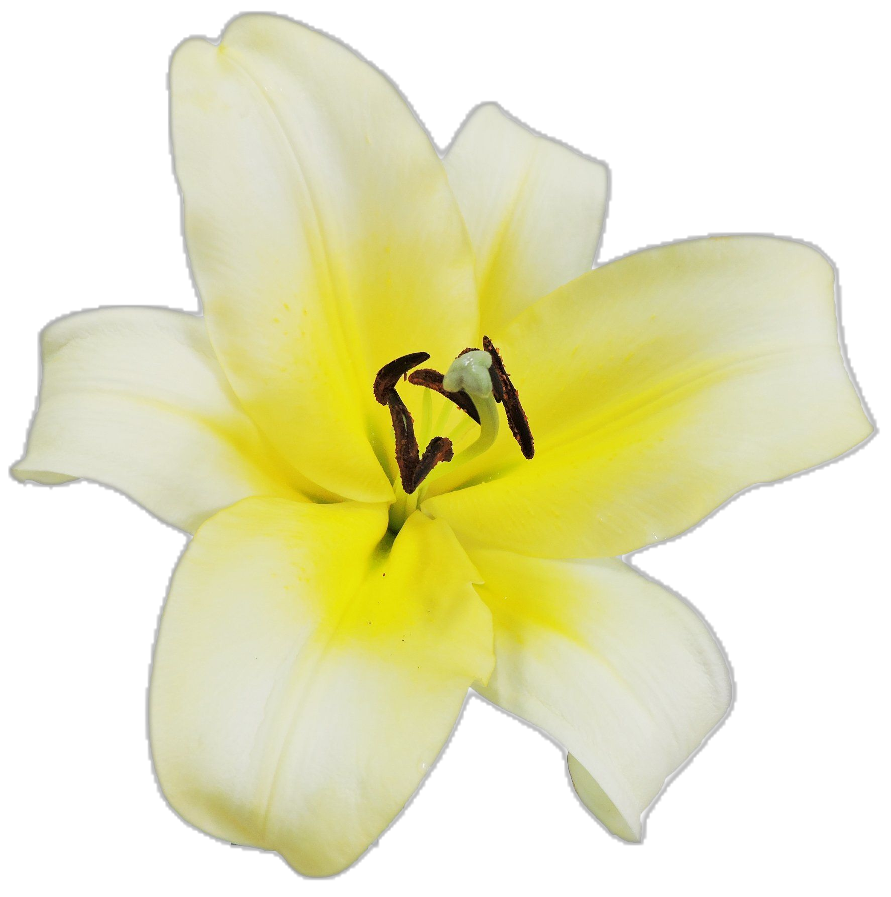
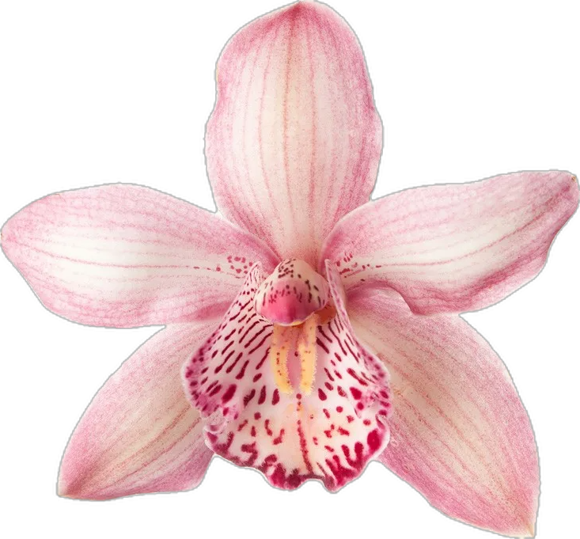
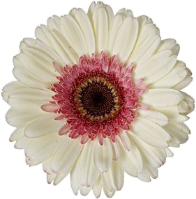
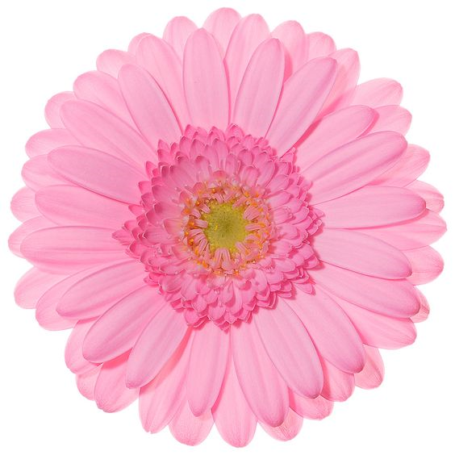
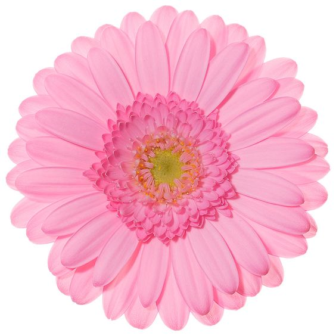
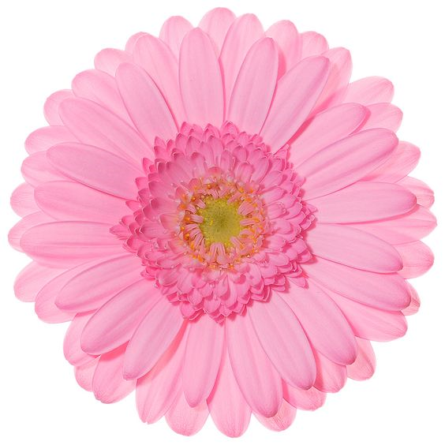

Lirios
Los lirios son flores elegantes y sofisticadas, conocidas por sus pétalos grandes y su variedad de colores.



Orquídeas
Las orquídeas son apreciadas por su belleza exótica y su amplia variedad de formas y colores.



Hierberas
Las hierberas son flores vibrantes y coloridas, ideales para alegrar cualquier jardín o arreglo floral.

 

